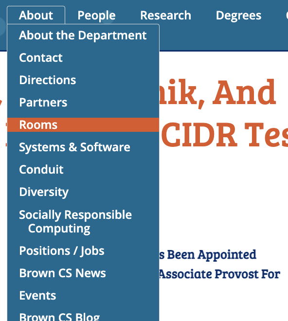
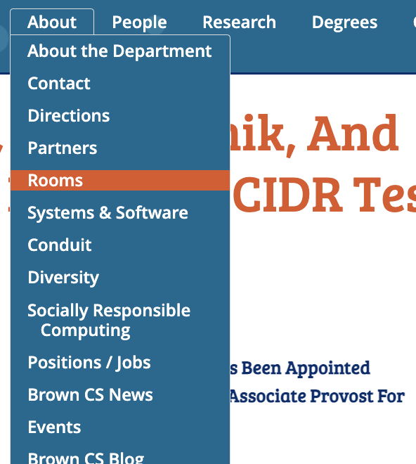

Inputs: How a user interacts with a component to change its state or trigger actions
Outputs: Shows a component’s state after an input, through visual changes or alt text


| Mouse & Touchpad | Keyboard | Touch | Visual Cues | Audio Cues |
|---|---|---|---|---|
| 1. Click into dropdown menu
2. Scroll through options 3. Click desired option Pros: Component is simple, very learnable |
1. Tab through website until at dropdown menu
2. Press down arrow to access dropdown menu and navigate to desired option 3. Press enter key Pros: Component is simple, very learnable |
1. Press dropdown menu button
2. Press desired option Cons: Dropdown menu is very long, easy to lose track of where you are |
- Active: Down arrow appears
- Focused: Blue outline surrounds dropdown menu - Selected: Current option is highlighted Pros: Dropdown is accessible; colors are distinct |
- Click: Plays when menu is selected
- Screen Reader: Focused option announced with status - Navigation Cue: Sound when moving through options Cons: Screenreader is very confusing |
| Mouse & Touchpad | Keyboard | Touch | Visual Cues | Audio Cues |
|---|---|---|---|---|
| 1. Click into dropdown menu
2. Click desired option Pros: Component is simple, very learnable |
1. Back tab through website until at dropdown menu
2. Press down arrow to access dropdown menu and navigate to desired option 3. Press enter key Cons: Not all dropdown menus accessible with keyboard actions |
- No dropdown menu appears when tapping the component through the app | - Focused: 1. Curser changes to pointer; 2. Menu changes shade
- Selected: Current option is highlighted Pros: Dropdown is accessible; colors are distinct |
- Click: Plays when menu is selected
- Screen Reader: Focused option announced with status - Navigation Cue: Sound when moving through options Cons: Screenreader is very confusing |

 


| Mouse & Touchpad | Keyboard | Touch | Visual Cues | Audio Cues |
|---|---|---|---|---|
| 1. Hover on dropdown menu
2. Scroll through options 3. Click desired option Pros: Component is simple, very learnable |
1. Tab through website until at dropdown menu
2. Press enter key to see main page of dropdown menu Cons: Dropdown menu with options not accessible from home page |
1. Press side bar
2. Press desired dropdown menu button and taken to main page of dropdown menu 3. Press side bar of that page 4. Press desired drop down option Cons: There are a lot of steps that could be confusing for first-time users |
- Active: Dropdown menu appears on hover
- Focused: 1. Curser changes to pointer - Selected: Current option is highlighted Pros: Dropdown is accessible; colors are distinct |
- Click: Plays when menu is selected
- Navigation Cue: Sound when moving through options Cons: Screen Reader is very confusing |
Let's look into Courses @ Brown as it currently exists, specifically for Mouse Interaction and Keyboard Interaction.


The revised state model removes an extra mosue click, which makes the dropdown menu is easier to access, which also increased learnability.

The revised state model allows tabbing-through to be active while in the dropdown menu, which would better continueuty, allowing for better learnability.
Note: the arrows represent actions (mouse clicks / keyboard interactions) the user will take.
-Overall, components that do well are ones with easy discoverability and learnability.
-When using a mouse, most of the dropdown menus I observed had signifiers that made them pretty learnable.
-When using keyboard shortcuts, the dropdown features were not always not most accessible, which could be confusing if you often switch between using a mouse and keyboard.
-Because keyboard users are used to tabbing-through components, I added tabbing out of a dropdown menu to improve learnability.
-After watching Kat Holmes's video, I put more thought into my design's discoverability and considered having the dropdown menu appear on a prolonged hover.
-The absence of the following signifiers can cause confusion: When dropdown menus do not 1. appear on a hover; 2. have the cursor change states; or 3. outline the button on a hover.
-Interestingly, mouse users are definitely prioritized when designing components for website applications, and mobile app are catered towards touch features, both of which favor able-bodied users.